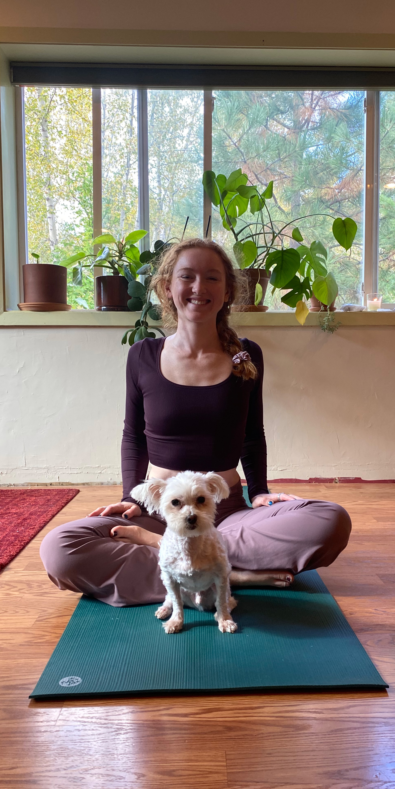

I am a yoga instructor and doula dwelling in the Missoula area.
My work is in the realm of budding families who I endeavor to support in a myriad of ways.
Born and raised in Montana, I have always known these mountain valleys as home.
Traveling has nourished my soul, and always only enhanced my appreciation of this land.
My quest to deepen my practice and earn my teaching certification led me to Indonesia, and after returning I continued to train in birthwork and prenatal yoga with Kendra Potter, a pillar of the birthing world here in Missoula.
I have worked with families for almost ten years in varying capacities, in and around the homespace, which eventually led me to where I am today.
I am actively working to help create a world with more comprehensive support for women and birthing people, whatever their situation may be.
